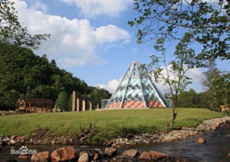
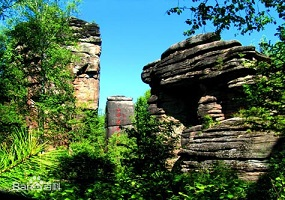
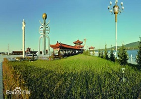
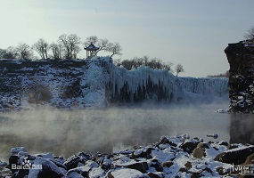
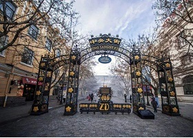
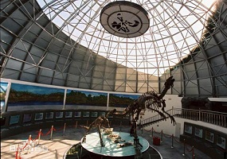

大美龙江
景区介绍-

大亮子河森林公园
位于黑龙江省东部小兴安岭与三江平原交汇区的汤原县境内，是以红松原始林为主体景观的国家级森林公园。总面积7175公顷，森林覆盖率97%，地带性植被以针叶、针阔混交林为主。
-

汤旺河林海奇石风景区
国家5A级景区，坐落于黑龙江省伊春市汤旺河区境内，面积190平方千米。拥有近千种动植物种类，石林景区是中国发现类型最齐全、发育最典型、造型最丰富的印支期地质遗迹。
-
铁人王进喜纪念馆
铁人王进喜纪念馆是为了纪念中国工人阶级的先锋战士——铁人王进喜而于1971年建成的。全馆总占地面积5.4万平方米，其中绿地面积3万平方米，主馆建筑面积1240平方米，是国家一级博物馆。
-

黑瞎子岛湿地公园
又称抚远三角洲、熊瞎子岛，位于中俄边界的黑龙江、乌苏里江汇合处，面积300多平方千米，黑瞎子岛湿地公园位于黑瞎子岛西侧，公园占水总面积1.2平方千米。
-
五营国家级森林公园
位于黑龙江省伊春市五营区境内，黑龙江省东北部，小兴安岭南坡中腹部，是伊春市最早的4A级的景区，是集观光、度假、养生、探险、科普教育等于一体的森林生态旅游胜地。
-

镜泊湖
镜泊湖，中国最大、世界第二大高山堰塞湖，位于中国黑龙江省牡丹江市宁安市境西南部的松花江支流牡丹江干流上，海拔 351米。湖水深度平均为40米。常年一般水位 最高353.65米，最低345.61米。
-
哈尔滨索菲亚广场
索菲亚广场成立于1997年，占地2.2万平方米，位于黑龙江省哈尔滨市美丽的松花江南岸，地处哈尔滨市中心繁华区域，索菲亚广场是国家AAAA级旅游景区。广场由圣·索菲亚教堂、犹太新会堂和建筑艺术广场三部分组成。1997年9月，圣·索菲亚教堂修复，经哈尔滨市政府批准，将其命名为哈尔滨市建筑艺术馆，隶属于哈尔滨市城乡建设委员会。
-

哈尔滨中央大街
始建于1898年，是亚洲最长、中国最早的步行街，国家4A级旅游景区。1997改造成为全国第一条步行街，中央大街全长1450米，宽21.34米，马路方石路宽10.8米。由花岗岩方石铺成的面包形状的路面，当时一块花岗岩方石价值1块银元，整条街路共有87万块方石，被称为“黄金铺路”。中央大街有欧式、仿欧式历史保护建筑71栋，其中主街25栋。
-

伊春嘉荫恐龙国家地质公园
国家4A级景区。位于伊春市嘉荫县城西11千米处，中俄界河黑龙江的南岸，总面积为38.44平方千米，属地质遗迹类。这里埋藏的恐龙化石多达数百具，是一座大型恐龙墓葬群，是一座集科普、娱乐、观光、休闲于一体，将自然科学和人文化景观紧密结合的大型综合博物馆，占地面积5000平方米，建筑面积4650平方米。是世界上石雕恐龙属种最齐全，数量众多的一处石雕景观。
{kind=link}
{kind=link}
{kind=link}
{kind=link}
{kind=link}
{kind=link}
{kind=link}
{kind=link}
{kind=link}